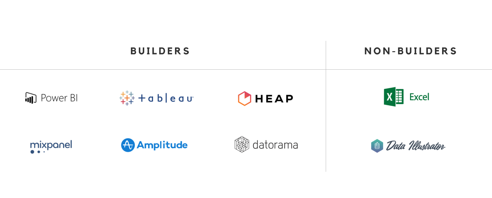
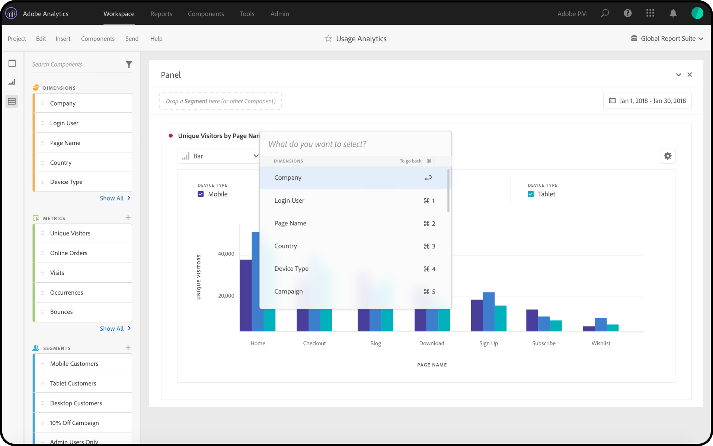

Redesigning & streamlining the way
users build data viz
Role
Lead designer (intern)
Project scope
Redesign & new features
team
PM & engineering
timeline
~ 3 months
Warning:
This project & case study were designed while I was still in university! Looking for more
recent work? Check out my
latest case study.
👀 OVERVIEW
As an intern on the Adobe Analytics team,
I spent my summer designing a new & improved visualization builder.
As Adobe’s enterprise platform for real-time web analytics, Analytics features visualizations as a core
part of its
everyday user flow. For almost 3 months, I focused on creating an easier and faster way to create data visualizations
without the complexity of manipulating a table—plus a couple smaller projects on the side!
🤔 PROBLEMS
The new viz builder was designed to be
a table-less method of making visualizations,
& a unified workflow for all viz types.
This would solve 2 major problems:
ONE. Right now, the only way to make a visualization like a line or bar
chart is to create a Freeform Table first.
A Freeform Table is great for doing a variety of complex functions, like breakdowns and filters. But even
if the user is
only interested in doing a really simple line chart, they still have to go through the hassle of making a
table.
For a novice user who isn't as familiar with how to make tables, or a user who just wants to quickly
create a
visualization they have in their head, this is really inconvenient. Analytics's competitors like Tableau
and Power BI
don't require users to make a table first, either.
TWO.
Analytics offers a wide variety of visualizations, like line, bar, venn, histograms, etc. But not all of these
visualizations are built in the same way. While some charts like line, bar, scatter, and donut
are table-based (ie. need
a table to be built first), others like venn and histograms aren’t, and can be made straight out of the
box. There's no
indication of which build method you'll need until you drag and drop it a visualization into your
workspace.
On top of that, the current UI is inconsistent across even visualization types that don't need tables.
Here's just a handful of visualization builders in prod:
The new viz builder should make the flow much more consistent,
requiring no tables and bridging the gap between our
table- and non-table-based visualizations.
🔍 BACKGROUND RESEARCH
As a newbie to the data analysis world,
my first step was doing some background research on Analytics itself.
After watching a few Youtube videos and playing around in a sandbox project,
I made an extensive audit of all the different visualizations
using Airtable. I documented how they were made, how they could be edited, any error messages that came
up, etc.
Once I had a pulse on the current state of our platform, it was time to look externally at all our
competitors. Of the
popular visualization platforms, most didn’t need a table and worked purely on drag & drop—a category we
call “builder.”

Then, I ran all of our table-less competitors through the same
criteria I used in the audit, looked at how we were doing
comparatively, and put together some initial ideas for
the cross-disciplinary team to explore as we got started on the
project.
😊😄 USER RESEARCH
Our next step was to interview Analytics users,
diving into what our different user archetypes would want out of a
new viz builder.
We were looking to hear from 2 types of users:
While making data visualization creation more accessible for novice users was one of our goals, we also
wanted to make
this a feature that even our most advanced users would get some good use out of.
In our calls, we asked users about their experience making visualizations in the platform today and how
they might use a
table-less viz builder. They gave us great feedback!
From a week of these calls, we learned that our users had 3 primary needs & wants:
Or to summarize in a few short words, the new viz builder should be easier, faster, & more robust!
💭 IDEATION
I spent the next few weeks exploring how to unify all the viz types into one user flow
& where to house all of the existing features,
all within a simple, minimal interface.
I started exploring a bunch of different avenues for the design to go, using Analytics's existing drag &
drop
functionality as a base. I tried to think of ways the viz builder could work that would be the fastest,
prettiest, most
intuitive, and most consistent.
Considering the problems we were trying to address with viz builder and how many features the Freeform
Tables has, this
ended up being a pretty long exploratory phase (spanning 6 Adobe XD files for organization's sake!).
Here's just a
snapshot of a few early iterations:
Iterations: Empty State
This is the state of the viz builder when it's first dragged into the workspace!
The biggest question was whether to have a "start screen" experience (1 & 2),
or to have users drag & drop directly into a chart (3).
Iterations: Filled State
Once the inputs of the viz are dropped in, it's a matter of storing them in an accessible way that lets
users easily modify them.
A few explorations included having a permanent section at the top of the builder (1), showing them on hover (2),
or storing them in a new right rail (3).
During this process, I spent a lot of time brainstorming how to approach incorporating advanced functions into
a simple viz builder that was also approachable for non-professionals. Taking inspiration from how Analytics already uses microinteractions like drag & drop
as the foundation of its user experience, especially with tables, the new viz builder leaned heavily on those microinteractions too.
In the end, the new designs were full of hover states, using different drag & drop combinations to perform different actions, and right click menus.
👩🔬🧪️ USABILITY TESTING
Our ideation was our best educated guess.
Who better to give feedback on the final designs than users themselves?
After many, many design reviews and xfn team meetings, we narrowed down all the iterations to a select few
for usability
testing. I created a short script of questions and a simplistic prototype, and together with my PM, we
started testing
the mocks with users.
Thanks to their candid feedback, we were able to narrow down the designs and do some last tweaks before
landing on the
final test candidate!
🖥️ PROTOTYPE
Take a look at the prototype
based on user feedback,
& all its microinteractions.
(Unfortunately, since I was an intern, I had no idea how to prototype drag & drop or hover despite these being the foundations of the experience, so it’s a very simple clickable
prototype with no
fancy animated interactions.)
💼️ SIDE PROJECTS
Besides redesigning the viz builder,
I also worked on a couple smaller projects: PDF Print Previews & Accessible Drag &
Drop.
I didn’t spend much time on these since they were either bite-sized or purely conceptual, but they were
still fun to
take on outside of my main internship project!
The first of these was a print dialog for analysts to print their
charts for physical reports (surprisingly common for
their line of work, even in an online world!).
While analysts might make lots of visualizations for their own use, they’d often need to collect
visualizations to tell
a narrative or provide a scoped view into a certain area for stakeholders or leads. But Analytics didn’t
have a print
preview or ability to select specific visualizations, so they’d have to print their entire
workspace--terrible
formatting and all--and then physically cut out the charts they needed.
The second project was an accessibility feature, helping users who
have trouble using a mouse navigate dragging &
dropping elements into visualizations.
Vanilla Analytics requires a lot of dragging specific elements from a long list in the left rail over to
the central
workspace, but using a mouse isn’t easy for everyone. What if there was a way to do everything with just a
keyboard?
I took inspiration from the way screen readers progress through the hierarchy of a page, starting from a
page’s big
sections that users can select to dive deeper into the sub-components. I also took inspiration from the
visual design of
macOS’s Spotlight for this concept!

👋️ NEXT STEPS
After 3 months on the team and 1 Adobe XD pillow,
it was time to say goodbye to Analytics.
It was a challenging summer diving into the wide and unknown world of data analytics, but I learned so much about how
complex enterprise products can be, and how even more complex it can be to design them in an easy,
user-friendly way! It
was my first time tackling more complex interactions like hover states, right clicks, and drag & drops,
and it was a
blast to see how many features you can fit into one minimal-looking builder.
(As for the outcome of these designs, although I think our engineers intended to build them, I’m not
entirely sure if
they ever made it to prod in actuality!)